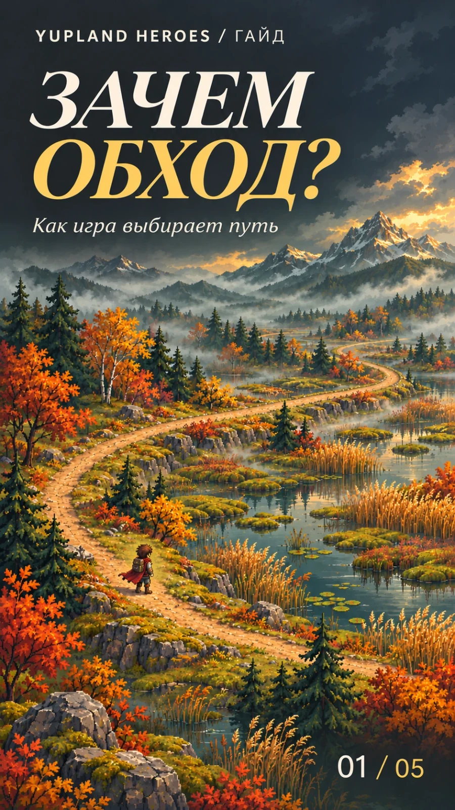
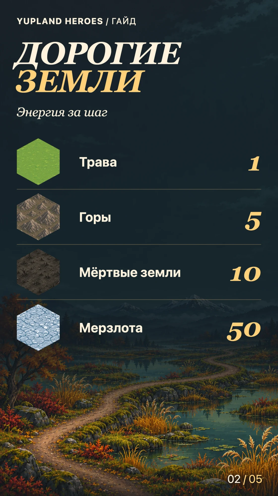
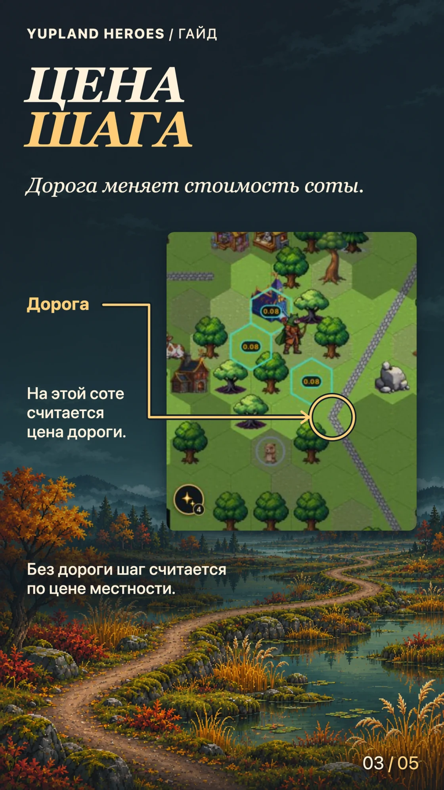
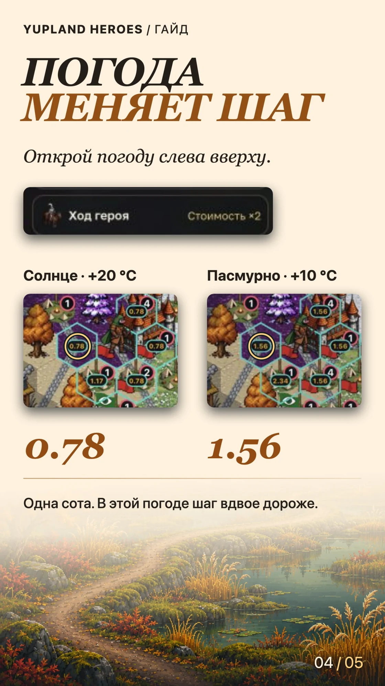
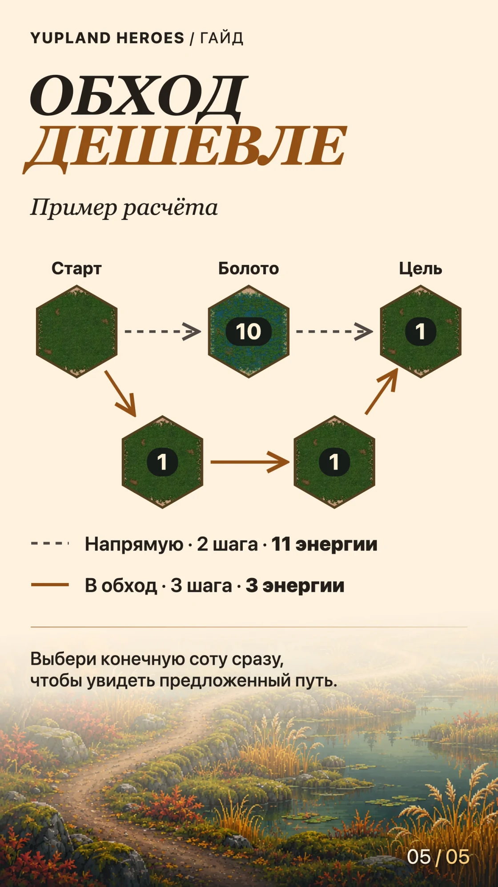

Почему герой идёт в обход
-
Обложка 
-
Шаг 01 
-
Шаг 02 
-
Шаг 03 
-
Шаг 04 
Когда выбираешь дальнюю соту, игра ищет путь с учётом расхода энергии. Иногда три шага обходятся дешевле двух. Чтобы понять почему, посмотри на местность, дороги и погоду.
Найди дорогие соты
В редакторе «Мира Альфа» от 23 октября указаны базовые цены за вход в одну соту.
| Местность | Энергия за шаг |
|---|---|
| Трава | 1 |
| Горы | 5 |
| Мёртвые земли | 10 |
| Мерзлота | 50 |
Одна сота Мёртвых земель по базовой цене равна десяти сотам травы. Мерзлота и снег считаются отдельно. На том же снимке у снега цена 2, у мерзлоты — 50. Перед ходом посмотри итог на соте или в плашке маршрута. Дорога, погода и свойства героя могут его изменить.
Учти дорогу
На соте с дорогой игра берёт за основу цену дороги. На соте без дороги — цену местности. Итог на карте также учитывает скидку героя, замедление и влияние погоды, если оно включено.
Сверь влияние погоды
Нажми значок погоды в левом верхнем углу и найди строку «Ход героя». На двух снимках одной и той же соты в Мидгарде видно 0.78 при +20 °C и 1.56 при +10 °C. На втором снимке карточка погоды показывает стоимость ×2. Смотри коэффициент в своей карточке, потому что он зависит от условий в мире.
Сравни весь путь
Допустим, шаг на болото стоит 10 энергии, а на траву — 1. Прямой путь через болото обойдётся в 11 энергии за два шага. Обход по траве займёт три шага и будет стоить 3 энергии. Числа в этой схеме условные.
Выбирай конечную соту сразу, чтобы увидеть предложенный обход. Если сначала нажать на доступную соседнюю соту, игра предложит шаг именно на неё.
У ворот есть отдельное правило. Игра сначала ищет обход, а проход через ворота предлагает, когда обхода нет и проход доступен.